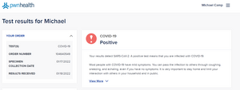

These past two weeks I had COVID and really struggled to get my work done. I mostly just slept for much of the time. Fortunately, I have been able to get at least the bare minimum done.
The code used for the lightbox effect is adapted from this Codepen by Tiffany Ong
I am feeling better and hope to do some extra reading and practice this coming week to make up for the lost time.I am gaining more confidence in my JavaScript, but still need to keep at it. I find it slips away when I don't put in the practice.
Where can I find a comprehensize list of JavaScript problems that interviewers are likely to ask me to solve? I really tripped up on those couple problems we have had so far and I want to practice, not just to pass interview tests, but to gain real understanding and problem solving skills.